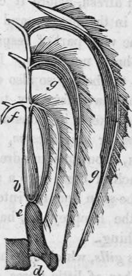

Respiration. Part 4
Description
This section is from the book "Human Physiology For The Use Of Elementary Schools", by Charles Alfred Lee. Also available from Amazon: Human Physiology, for the Use of Elementary Schools.
Respiration. Part 4
21. The quantity of oxygen consumed by a man in a minute, is about 30 cubic inches. He breathes 20 times in a minute ; and every time he breathes, takes into his lungs 15 cubic inches of atmospheric air, which contains three cubic inches of oxygen, so that one half of that which is inspired disappears in every act of respiration. This will amount to about 2,000 cubic inches in an hour, and 45,000 cubic inches in 24 hours. Thus one man will consume, in 24 hours, all the oxygen contained in a space of 312 square feet; or in 12 hours, in 156 square feet. And still our churches, and schoolrooms, and dwelling houses, are constructed with no view to a renovation of the air we breathe !
22. Dr. Southwood Smith has lately performed a series of very interesting experiments, from which he deduces the following general results :-" 1. The volume of air ordinarily present in the lungs is about 12 pints. 2. The volume of air received by the lungs at an ordinary inspiration is one pint. 3. The volume of air expelled from the lungs at an ordinary expiration, is a little less than one pint. 4. Of the volume of air received by the lungs at one inspiration, only one fourth part is decomposed at one action of the heart, and this is so decomposed in the five sixth parts of one second of time. 5. The blood circulates through the system, and returns to the heart in 160 seconds of time, which is exactly the time in which the whole volume of air in the lungs is decomposed. These circuits are performed every eight minutes; 540 circuits are performed every 24 hours. 6. The whole volume of air decomposed in 24 hours is 221,882 cubic inches, exactly 540 times the volume of the contents of the lungs.
7. The quantity of blood that flows to the lungs to be acted upon by the air at one action of the heart is two ounces, and this is acted on in less than one second of time. 8. The quantity of blood in the whole body of the human adult is 24 pounds avoirdupois, or 20 pints. 9. In 24 hours 57 hogsheads of air flow to the lungs. 10. In the same time, 24 hogsheads of blood are presented in the lungs to this quantity of air. 11. In the mutual action that takes place between these quantities of air and blood, the air loses 328 ounces of oxygen, and the blood 10 ounces of carbon."
23. The blood, as it goes the round of the system, leaving a little bony matter here, a little muscular there; supplying the nails, and the hair, and the skin, and every thing, with the particles which, in the wear and tear of the machine, they have lost; loses by degrees its bright arterial colour, and by the time it comes round again to the lungs, it is no longer fit to perform its duty ; it has been robbed of all its principles most essential to life, and it must be renewed and prepared afresh, before it can be of any further use. This is done in the lungs : and this process is what' physiologists call the vital part of respiration.
24. All animals have not lungs. Insects absorb the air from the surface of the body; so also do many of the family of zoophytes. Some have feathery tufts, like a plume of feathers, which they keep in constant motion; while the common earth worm, or angle worm, has a single row of holes along its back, about one hundred and twenty in number, which open each of them into a small respiratory bag, situated between the skin and the intestine. The leech or blood sucker, and the lamprey eel, have the same kind of apparatus for breathing.
25. In fishes, the gills, which are their lungs, are made up of an infinite number of little fibres, or filaments, set close together, like the teeth of a fine comb, or the barbs of a feather; and these are covered with innumerable small processes, crowded together like the nap of velvet, and over, these are spread myriads of blood vessels, like a fine network. The air which is contained in the water, is drawn in with it by the mouth, and forced, by the muscles of the throat, through the opening leading to the gills, the filaments of which are expanded and separated by the same process, so that they receive the full action of the fluid as it passes by them. When a fish is taken out of water, the reason he cannot breathe is, that these filaments collapse, and adhere together in a mass, and the air cannot separate them.
26. The seal, porpoise, dolphin and whale, belong to the class mammalia, and therefore have to rise to the surface of the water to get air to breathe. It is this necessity which exposes the whale to the harpoon of the fisherman; for such are his strength and swiftness, that, could he live entirely under water, he might defy the utmost ingenuity of man to capture him.
The above cut shows the mode of respiration in fishes. The gills are seen bent over in the form of a feather: d is the auricle of the heart; e, the ventricle; f, the bronchial artery ; g, g, the gills. The heart of a fish throws the blood only to the gills, and not to the rest of the body as in other animals. This is the reason why the gills are red, while the other parts of a fish are white. Respiration in fishes is, therefore, performed by taking water into the mouth, and forcing it through the gills ; in this manner the air contained in the water is brought in contact with the thin coats of the blood vessels, through which the oxygen is absorbed.
Questions
What is meant by respiration?-by inspiration ?-by expiration? How are the parts concerned in respiration arranged? What bones are concerned ? Describe the position of the ribs. What muscles are chiefly concerned in respiration ? Describe the intercos tals,-the diaphragm. How does the diaphragm act in inspiration ? In expiration ? What causes the deecent of the ribs in expiration ? Describe the structure of the lungs. What called in the lower animals ? What are the pleurae ?-the mediastinum ? How many compartments is the chest divided into ? In which is the heart ? What is the trachea ? What does it end in ? How large are the air cells ? What is the office of respiration ? What amount of surface do the air cells present ? How does the blood get in contact with the air ? Describe the process of respiration. How does tight lacing injure the health ? What happens if a hole is made into the cavity of the chest ? What is the weight of the atmosphere equal to ? Of what gases is it composed ? What effect do vegetables have on air ? What is oxygen ?- azote ? What is the effect of respiration on air ? How much oxygen is consumed by a man in twenty four hours ? How do insects breathe? -the earth worm ?-fishes ?-birds ?-the whale ? etc.
Continue to:
Tags
humans, anatomy, skeleton, bones, physiology, organs, nerves, brain